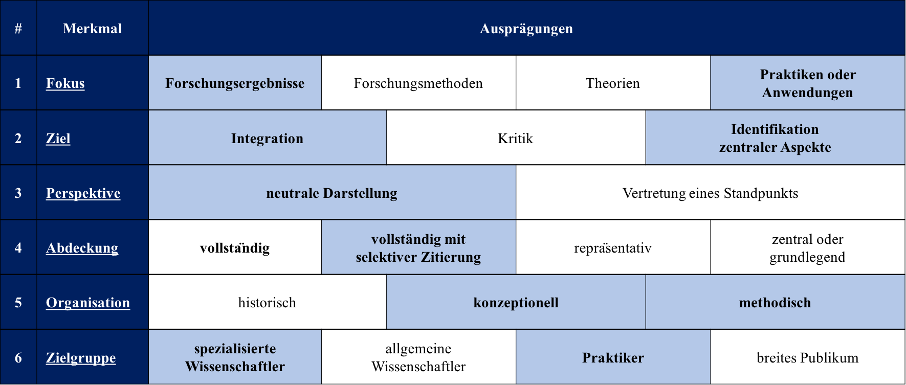

Das 1. Merkmal Fokus nennt verschiedene Arten von Quellen, nach denen das zu sichtende Material auszuwählen ist.
Dabei unterteilt sich das Merkmal in Forschungsergebnisse, Forschungsmethode, Theorien und Praktiken oder Anwendungen.
Die verschiedenen Ausprägungen sind nicht exklusiv, sondern lassen sich miteinander kombinieren.
Die Auswahl der Texte dieser Analyse erfolgt aus der Kombination von Forschungsergebnissen und Praktiken oder Anwendungen.
Zurück
Mit dem 2. Merkmal, dem Ziel, wird die Absicht und der Zweck der Arbeit verdeutlicht.
Das Merkmal ist in Integration, Kritik und Identifikation zentraler Aspekte untergliedert.
Integration meint die Generalisierung und Auflösung von Konflikten sowie Entwicklung sprachlicher Brücken.
Bei der Generalisierung wird existierende Literatur gesammelt und synthetisiert.
So lassen sich zentrale Aussagen zu einer bestimmten Forschungsfrage treffen.
Bei Auflösung von Konflikten werden in der Literatur widersprechende Aussagen analysiert, um mit einem überarbeiteten Konzept zur Lösung dieses Konflikts beizutragen.
Mit der Entwicklung sprachlicher Brücken wird ein gemeinsames Sprachverständnis erarbeitet, das verschiedene Termini verein- heitlichen soll.
Die 2. Ausprägung Kritik des Merkmals Ziel hinterfragt kritisch die in der Literatur aufgestellten Thesen, indem diese mit Hilfe gewählter Kriterien miteinander verglichen werden.
Die Zielrichtung für die Identifikation zentraler Aspekte kann sich auf aktuelle Forschungsfragen sowie auf neue Forschungsfragen, die nach Ansicht des Autors stärker fokussiert werden sollten, beziehen.
Zudem lassen sich methodische Lösungsansätze erarbeiten, die für Themengebiete genutzt werden.
In dieser Arbeit wird, ausgehend von der Identifikation zentraler Aspekte, die Generalisierung existierender Literatur durchgeführt.
Zurück
Das 3. Merkmal, die Perspektive, drückt den Standpunkt der Arbeit aus.
Ein Text kann aus einer neutralen oder einer subjektiven Perspektive geschrieben werden.
Nach Cooper ist allerdings eine vollständig neutrale Position nicht durchführbar, da der Verfasser meist zu einer bevorzugten Interpretation tendiert (Cooper, 1988, S. 110).
Diese Masterarbeit versucht, eine neutrale Perspektive einzunehmen.
Zurück
Die Ergebnisse können im Grad der Abdeckung variieren.
Das 4. Merkmal, Abdeckung, umfasst die Ausprägungen vollständig, vollständig mit selektiver Zitierung, repräsentativ und zentral/grundlegend.
Mit Hilfe von Selektionskriterien wird die Literatur vollständig analysiert.
Treffende Lösungsvorschläge werden untersucht und in der Ergebnispräsentation angeführt.
Zurück
Bei dem 5. Merkmal, Organisation, handelt es sich um die Aufarbeitung der Ergebnisse.
Diese können den Ausprägungen nach in historisch, konzeptionell und methodisch untergliedert werden.
Beim historischen Ansatz wird die Literatur in chronologischer Reihenfolge nach dem Veröffentlichungsjahr organisiert.
Bei dem konzeptionellen Ansatz wird die Literatur mit anderen Texten gleicher, abstrakter Grundidee gebündelt und aufgearbeitet.
Bei einem methodischen Ansatz werden Arbeiten mit ähnlicher oder gleicher Methodik verwendet.
Eine Kombination verschiedener Ausprägungen ist auch für dieses Merkmal möglich.
Die Masterarbeit wird die Ergebnisse mit Hilfe eines konzeptionellen und methodischen An- satzes darlegen.
Zurück
Das letzte der 6 nach Cooper vorgeschlagenen Merkmale zur Klassifizierung einer Literatur- analyse ist die Zielgruppe.
Sie gliedert sich in spezialisierte Wissenschaftler, allgemeine Wis- senschaftler, Praktiker und breites Publikum.
Diese Arbeit ist sowohl an den spezialisierten Wissenschaftlicher als auch an den interessierten Praktiker adressiert.
Zurück

Zur Erklärung der Merkmale auf die Graphik klicken.